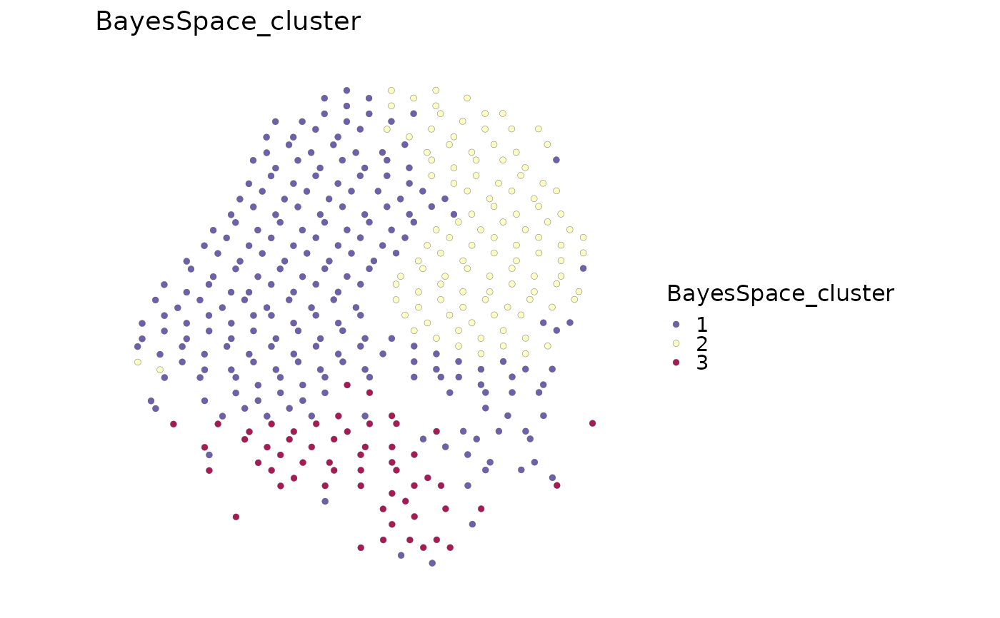

Run BayesSpace spatial clustering
Usage
RunBayesSpace(
object,
q,
assay = NULL,
platform = c("Visium", "VisiumHD", "ST"),
image = NULL,
use_reduction = NULL,
dims = 1:15,
preprocess = TRUE,
n.PCs = 15,
n.HVGs = 2000,
skip.PCA = !is.null(use_reduction),
spatial_preprocess_params = list(),
spatial_cluster_params = list(),
cluster_colname = "BayesSpace_cluster",
init_colname = "BayesSpace_init",
store_sce = TRUE,
verbose = TRUE,
coord.cols = c("col", "row"),
srt = NULL
)Arguments
- object
A
Seuratobject.- q
Number of BayesSpace clusters.
- assay
Assay to use.
NULLuses the default assay.- platform
Spatial sequencing platform.
- image
Name of the Seurat spatial image used to recover spot coordinates when they are not already present in metadata. For regular Visium data with only pixel
x/ycoordinates, BayesSpace array coordinates are inferred from the spatial grid.- use_reduction
Optional Seurat reduction to pass to BayesSpace as PCA.
- dims
Dimensions from
use_reductionto use.- preprocess
Whether to run
BayesSpace::spatialPreprocess().- n.PCs, n.HVGs
Parameters passed to
spatialPreprocess().- skip.PCA
Whether to skip PCA inside
spatialPreprocess().- spatial_preprocess_params
Additional parameters passed to
BayesSpace::spatialPreprocess().- spatial_cluster_params
Additional parameters passed to
BayesSpace::spatialCluster().- cluster_colname
Metadata column used for BayesSpace clusters.
- init_colname
Metadata column used for BayesSpace initial clusters.
- store_sce
Whether to store the BayesSpace
SingleCellExperimentinsrt@tools.- verbose
Whether to print the message. Default is
TRUE.- coord.cols
Two metadata columns containing raw x/y coordinates when no spatial image is available. Non-default selections also determine the coordinates passed to BayesSpace, overriding other metadata coordinate columns. The default selection preserves existing
array_col/array_roworcol/rowindices when available. Standard array names (col/row,array_col/array_row, orarraycol/arrayrow, case-insensitive) preserve native array indices; other column names are treated as pixel coordinates from which a regular array grid is inferred.- srt
Deprecated alias for
object; supply exactly one of the two. It will be removed in scop 1.0.0.
Value
A Seurat object with BayesSpace clusters in metadata and raw
results in srt@tools[["BayesSpace"]].
Examples
Restored example output generated on 2026-10-10 from SCOP 151e7134c. These historical examples have not been revalidated against the current release. Current usage and arguments are documented above.
data(visium_human_pancreas_sub)
keep_spots <- unique(round(seq(1, ncol(visium_human_pancreas_sub), length.out = 400)))
spatial <- visium_human_pancreas_sub[, keep_spots]
spatial <- RunBayesSpace(
spatial,
q = 3,
n.PCs = 5,
n.HVGs = 200,
store_sce = FALSE,
spatial_cluster_params = list(nrep = 100, burn.in = 10, thin = 5),
coord.cols = c("x", "y"),
verbose = FALSE
)
#> Neighbors were identified for 377 out of 400 spots.
#> Fitting model...
#> Calculating labels using iterations 11 through 100.
SpatialSpotPlot(
spatial,
group.by = "BayesSpace_cluster",
overlay_image = FALSE,
coord.cols = c("x", "y"),
pt.size = 1.5
)
